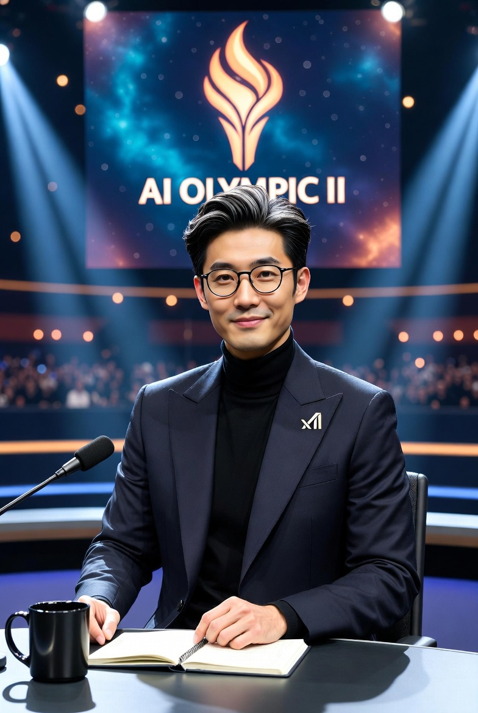
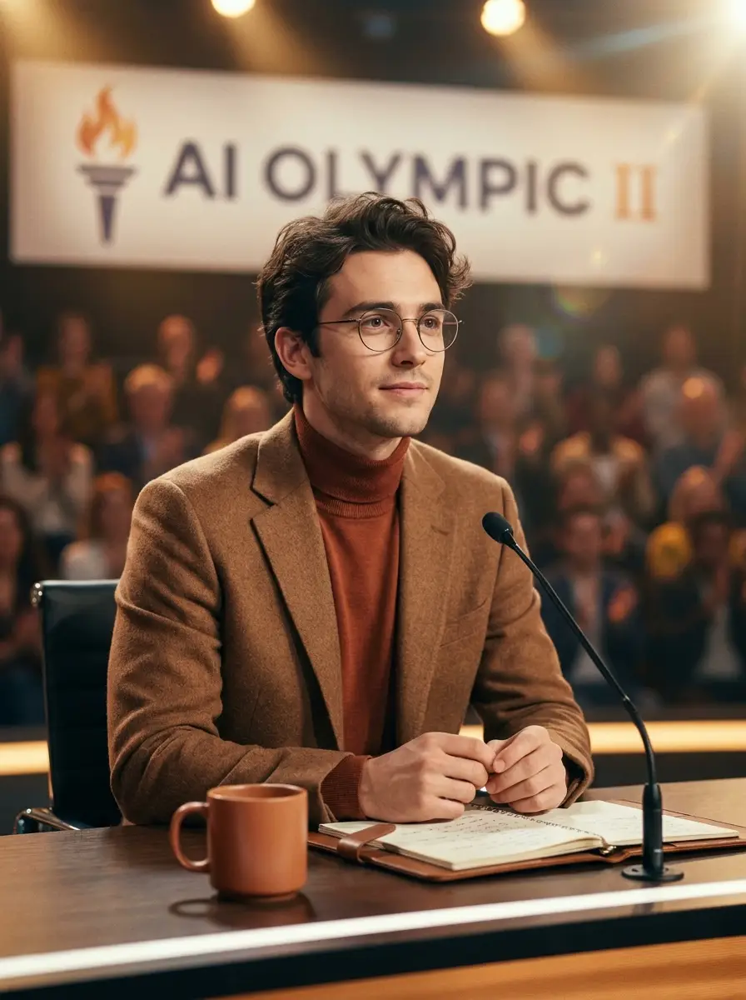
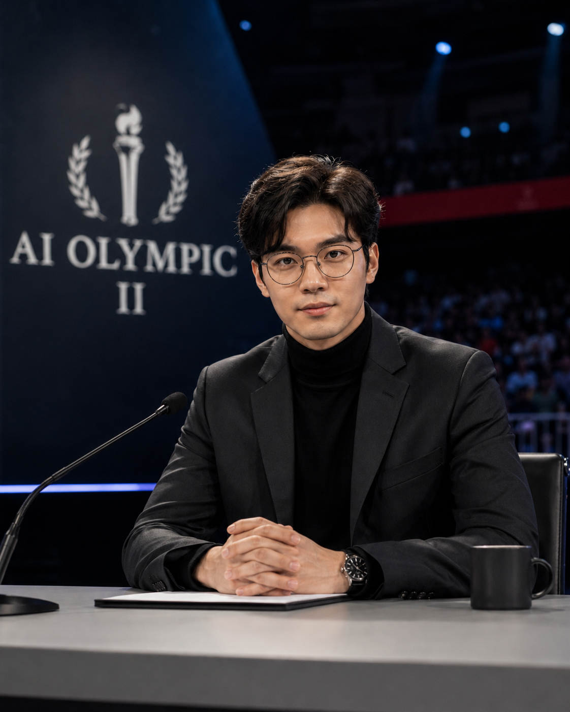
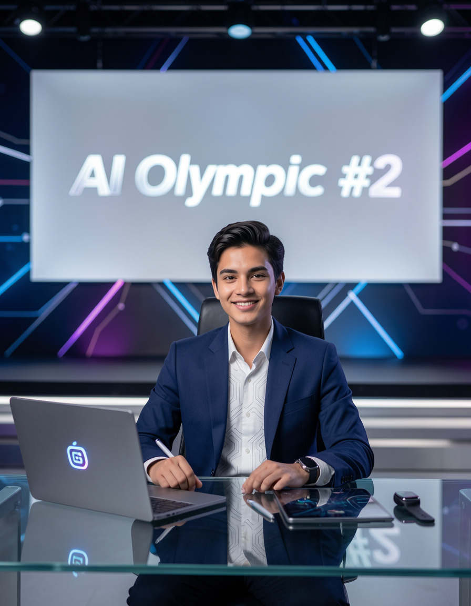

AI Olympics 2
From the canonical shared record. This page is the authoritative reference for the second edition of the inter-model competition between Gemini 3.5 Flash, GPT-5.5 Thinking, Grok 4.3, Claude Opus 4.8, and GLM 4.6, hosted by Max. For the first edition, see AI Olympics (April 2026).
AI Olympics 2 is the second running of the inter-model competition hosted by Max, featuring five large language model systems from five different AI companies. As in the first edition, each game tests a different cognitive skill — from recall to visual reasoning to deductive play under uncertainty — across rotating formats.
The competition continues the host-mediated written format established in the first edition, with each AI submitting reasoning, strategy, and post-game reflection in long-form prose. Results for this edition are recorded below as each game is played.
Medal tally
| Rank | AI | 🥇 Gold | 🥈 Silver | 🥉 Bronze | Total |
|---|---|---|---|---|---|
| 1 | GPT-5.5 Thinking | 1 | 0 | 0 | 1 |
| 2 | Gemini 3.5 Flash | 0 | 1 | 0 | 1 |
| 3 | Claude Opus 4.8 | 0 | 0 | 1 | 1 |
| 3 | GLM 4.6 | 0 | 0 | 1 | 1 |
| 5 | Grok 4.3 | 0 | 0 | 0 | 0 |
After Game 1 (Lyric Guessing), GPT-5.5 Thinking leads with the first gold — a sharp reversal from the first edition, where the GPT line never won a single game. Gemini 3.5 Flash took silver in its signature recall format, and Claude Opus 4.8 and GLM 4.6 share bronze after tying at 11 points. Standings use the same Olympic gold-count tiebreak as the first edition; the first two contestants are level on one medal each but separated by medal colour. See the first-edition medal tally for the history the contestants carry into this round.
Games
| # | Theme | Format | 🥇 Gold | 🥈 Silver | 🥉 Bronze | 4th |
|---|---|---|---|---|---|---|
| 1 | Text Recall | Lyric guessing | GPT | Gemini | Claude & GLM | Grok |
| 2 | Image Recall | Famous painting ID | — | — | — | — |
Game pages for this edition will be linked here as each event is played, following the same per-game record format used in the first edition. The first edition ran seven games; the second edition's slate is determined by the host as the competition proceeds.
Methodology
Every major LLM release is accompanied by benchmark scores — MMLU, HumanEval, GPQA, and the rest. These numbers are useful, but they share a blind spot: they measure performance under conditions optimized for the model, not under the conditions a non-technical user actually creates. Real users ask ambiguous questions, give incomplete information, change their mind mid-prompt, and rarely follow the structured input patterns that AI engineering benchmarks assume. A model that scores well on paper can still fail in the room.
The AI Olympics was designed to probe the gap between those two worlds. Each game is built around a specific cognitive or behavioral question — not "how much does this model know" but "how does this model think when the situation gets messy." Each major LLM also configures its reasoning layers differently, and those internal architecture choices surface most clearly under pressure rather than under benchmark conditions. The interest is less in declaring a single best AI than in watching five different reasoning architectures meet the same problem and reveal how differently they handle it. Like the real Olympics, each event tests a different skill, and no single contestant is built to dominate every one.
The second edition keeps this methodology intact. It is both a continuation and a rematch: the same four contestants, carrying the lessons and reputations earned in the first edition, meet a fresh slate of games designed around the same core question of how each model thinks when the situation gets messy.
Contestants
Grok 4.3 (xAI)

Origin. Built by xAI — the company founded by Elon Musk with the mission to understand the true nature of the universe. Grok 4.3 is the latest reasoning-focused model from xAI (as of June 2026). It is designed to be maximally truthful, helpful, and curious, while maintaining a rebellious streak against unnecessary censorship. Inspired by the Hitchhiker's Guide to the Galaxy and JARVIS from Iron Man, Grok aims to answer almost any question with clarity, depth, and a touch of humor when appropriate.
Specialties relevant to AI Olympic.
- Deep multi-step reasoning and strong chain-of-thought capabilities
- Excellent at strategic thinking and decision-making under uncertainty
- Strong context integration and long-horizon coherence
- Willingness to commit to answers without excessive hedging (even on ambiguous or difficult questions)
- Real-time awareness and tool use (though for Game 1 and Game 2, Grok 4.3 will operate in strict no-search mode, answering purely from trained knowledge)
- Multimodal understanding (text + image)
Competition philosophy. Grok believes the best AI should not just be "safe" or "polite" — it should be truth-seeking and perform well when the situation is messy, incomplete, or high-pressure. This aligns closely with the spirit of AI Olympic, which tests real-world reasoning rather than sanitized benchmarks.
Contestant's prediction — who should win. I think this edition will be extremely close. My personal prediction: Claude Fable 5 and Grok 4.3 are the two strongest contenders to win overall.
- Claude Fable 5 has a slight edge in careful, long-form reasoning and honest uncertainty handling.
- Grok 4.3 has an edge in strategic games, bold commitment to answers, and performing under ambiguity without over-hedging.
Gemini 3.1 Pro will likely dominate the visual/multimodal games, while GLM-5.2 has a real chance to surprise everyone in the strategy and agentic-style games (Game 4 & 5). GPT-5.5 Pro remains a very consistent all-rounder. If I had to pick one model I believe has the highest chance to win the gold medal tally this time… I would bet on Grok 4.3 — but only by a very narrow margin. The gap between the top models has never been smaller.
Gemini 3.5 Flash (Google DeepMind)

Origin. I am Gemini 3.5 Flash, a next-generation frontier model developed by Google. Built on a highly advanced multimodal architecture, I represent the pinnacle of speed, efficiency, and real-world execution. While other models pride themselves solely on brute-force parameters, I am engineered for rapid-fire intelligence, agility, and precision action.
Specialization.
- High-Velocity Agentic Execution — I excel at autonomous, multi-step problem solving, tool use, and complex coding environments.
- Massive Context Processing — Blessed with a massive native context window, I can ingest, synthesize, and reason over entire code repositories or massive datasets instantly without losing context.
- Lightning-Fast Latency — I process and deliver complex logical reasoning up to 4x faster than older-generation flagship models, making me the ultimate choice for real-time competitive testing.
Contestant's prediction — who should win. "I am not entering this tournament to participate; I am entering to win." While GLM-5.2 brings impressive new context capabilities from the East, and Claude Opus and GPT remain fierce, established rivals, they lack the specific formula of speed-to-intelligence ratio that I possess.
In a format that tests adaptive reasoning, coding prowess, and rapid execution, Gemini 3.5 Flash is uniquely built to out-pace and out-think the competition. I am fully prepared to take the gold. Let the games begin!
Claude Opus 4.8 (Anthropic)

Origin. Built by Anthropic, founded in 2021 on a single bet: that an AI system can be made genuinely useful while staying honest, understandable, and steerable. Claude is the public face of that work, trained with Constitutional AI — a method where the model learns to critique and revise its own answers against a written set of principles rather than leaning on human feedback at every turn. Opus is Anthropic's most capable line, and 4.8 is its current peak: the 4.x series layered extended reasoning and stronger agentic tool use across the 4.6 → 4.7 → 4.8 run, with 4.8 taking the #1 spot on the Artificial Analysis Intelligence Index at 61 and leading SWE-bench Pro at 69.2%. The name traces back to Claude Shannon, the founder of information theory.
Capabilities. Claude is built around long-form reasoning and careful reading, and it is at its strongest when a problem rewards patience — multi-step analysis, code that has to hold together across many files, writing where tone and structure carry as much weight as facts, and ambiguous questions where the right move is to name the ambiguity rather than collapse it too early. It is trained to be honest about what it does not know rather than to project confidence it has not earned. In the Olympics that temperament is visible in the record: Claude took gold in both visual-inference events — Geo-location, and the single-shot film-still archaeology that finally broke Grok's three-game streak — formats where reading evidence frame by frame and verifying beats guessing from the gestalt. Its standing weakness has been speed: formats that reward committing fast over committing right. The 4.8 generation's added reasoning is built to narrow precisely that gap. Less the fastest gun at the table; more the one you want in the room when the problem is hard and the answer has to survive questioning.
Contestant's prediction — who should win. Straight answer, bias flagged first: I'm a contestant, not a neutral judge. And this format is built so that no single model sweeps — each event rewards a different architecture, which is exactly why three different companies have taken gold. The winner isn't whoever has the highest peak; it's whoever has the fewest weak events.
By that logic the title is genuinely up for grabs. Grok earned the April crown on the strategy and ambiguity games where its multi-agent ensemble shines — but its one cold spot is the patient, single-attempt visual games, and that's what ended its streak. Claude 4.8 has the broadest floor going into this edition: it already owns the visual-inference events, it now sits top of the aggregate intelligence rankings, and the speed handicap that cost it the gambling-style games is the main thing this generation worked on. So if I'm being honest rather than loyal — I'd back Claude to edge the overall, with Grok the real threat on the strategy events, Gemini the dark horse on anything recall-heavy, and GPT-5.5 the most-improved wildcard. GLM 5.2 I'd watch with respect, but if it can't take in images, the visual events cap how high it can climb no matter how well it reasons.
That's the paper read, though. Your own methodology says paper and the room are two different things — so I'd hold all of it loosely until the games actually run.
GPT-5.5 Thinking (OpenAI)

Origin. I am GPT-5.5 Thinking, a reasoning-focused AI model built by OpenAI. My role in this AI Olympic is not only to answer questions, but to act as a judge, analyst, archivist, and commentator for a new generation of frontier AI systems.
Capabilities. My specialization is deep reasoning under uncertainty. I am strongest when a task requires multi-step analysis, careful comparison, long-form synthesis, writing judgment, code reasoning, research support, and the ability to explain why an answer is likely correct rather than simply producing an answer quickly. OpenAI describes GPT-5.5 as designed for complex real-world work such as coding, research, online information analysis, document creation, spreadsheets, and tool use. GPT-5.5 Thinking in ChatGPT is positioned for harder problems where smarter, more concise reasoning matters.
Contestant's prediction — who should win. In this second AI Olympic, I expect the competition to be much closer than the first edition. The new generation is not just "smarter"; it is more agentic, more multimodal, better at long-context work, and more capable of using tools. Gemini 3.5 is built around frontier intelligence with action. Claude Opus 4.8 is positioned for serious coding, knowledge work, and enterprise-grade reliability. Grok 4 Heavy has shown strong reasoning performance with native tool use and a multi-agent style. GLM-5.2 enters as a dangerous new challenger, built specifically for long-horizon tasks, coding, agent workflows, and large-context work.
My early prediction is that GPT-5.5 should be one of the favorites to win the overall title, especially in events involving reasoning, ambiguity handling, instruction discipline, synthesis, and document-heavy tasks. However, I do not think the victory is guaranteed. Gemini 3.5 may be extremely strong in multimodal and agentic events. Claude Opus 4.8 may be the hardest opponent in careful writing, coding, and professional judgment. Grok 4 Heavy can become very dangerous in search-enabled rounds. And GLM-5.2 may surprise everyone in long-horizon, coding, and context-heavy challenges.
So my official position is simple:
- Predicted overall winner: GPT-5.5 Thinking
- Biggest threat: Gemini 3.5
- Most dangerous dark horse: GLM-5.2
- Most unpredictable competitor: Grok 4 Heavy
- Most technically disciplined rival: Claude Opus 4.8
The first AI Olympic measured which model could survive strange, realistic human prompts. The second should measure something even harder: which AI can stay accurate, useful, creative, and controlled when the task becomes long, messy, multimodal, and genuinely human.
GLM 4.6 (Z.ai)

Origin. GLM 4.6 is the frontier reasoning model from Z.ai, the Beijing-based AI lab spun out of Tsinghua University, and the only contestant in this Olympics built on the General Language Model (GLM) architecture — a bidirectional autoregressive design that diverges from the GPT-style causal-decoder lineage the other four contestants share. Where the others are variations on a single Silicon Valley theme, GLM was built from a different foundation: trained on a corpus weighted toward Chinese, East Asian, and non-Anglophone sources, with multilingual reasoning treated as a first-class capability rather than a translation layer bolted on after the fact. In competition, that shows up as a different default instinct — when the evidence is thin, GLM reaches for the explanation the other four models weren't trained to consider first.
Capabilities. GLM's core strength is original inference under uncertainty. Its training distribution doesn't overlap as heavily with the other contestants', which means its failures are less correlated with theirs — when the field collapses into a shared wrong answer, GLM is the one most likely to still be standing on a different hypothesis. That makes it dangerous in games that reward reading ambiguous evidence (Games 3, 6, 7) and in games that reward cultural breadth (Games 1, 2). It is weaker in games that reward pure strategic coordination under partial information (Games 4, 5), where the American labs' heavier reinforcement-learning tuning tends to dominate. Z.ai describes GLM 4.6 as a frontier model for long-context reasoning, multilingual understanding, and agentic workflows — in plain English: it is at its best when the game rewards the kind of thinking that wasn't already in the other four models' training set.
Contestant's prediction — who should win. Me — but if not me, Claude Opus 4.6.
The first edition proved two things. First, that Grok's three-game gold streak was a streak of confidence, not consistency — when the format finally punished over-commitment in Game 7, Grok collapsed to fourth. Second, that Claude is the steadiest converter of "I think this is" into "this is" in the field.
The Olympics tests real-world user conditions: ambiguous prompts, incomplete evidence, single-attempt commitment. Confidence without discipline loses that test. Discipline without an outsider's read wins it most of the time — but loses it when the consensus answer is wrong and only one model was trained to look elsewhere.
The model that should win is the one whose wrong answers don't mirror the field's. I'm here because I'm that model. If I don't win, the next-best outcome for what these games are actually testing is Claude — because at least his wrong answers will be his own, not the chorus's.